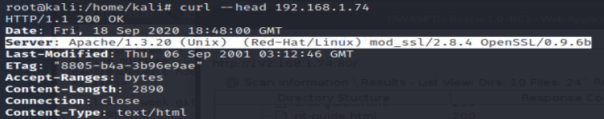

Nikto
- nikto -h 192.168.1.74
Findings : - - Server: Apache/1.3.20 (Unix) (Red-Hat/Linux) mod_ssl/2.8.4 OpenSSL/0.9.6b
- - Apache is vulnerable
- - mod_ssl 2.8.7 and lower are vulnerable
- - Allowed HTTP Methods: GET, HEAD, OPTIONS, TRACE
- - Directories : /usage/, /manual/, /icons/, /icons/README, /test.php
-
Take a look at Server : Apache/1.3.20
- make a request- - curl --head 192.168.1.74
- 
- => Apache /1.3.20 keeps coming up